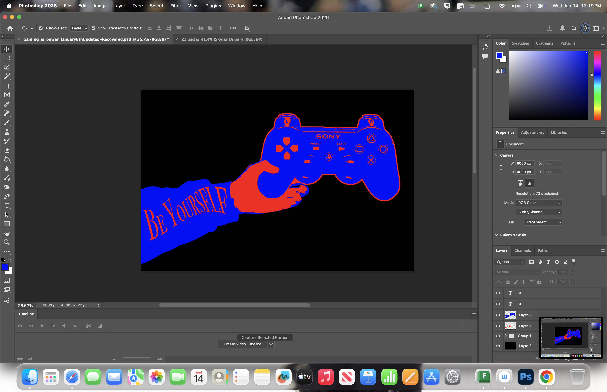
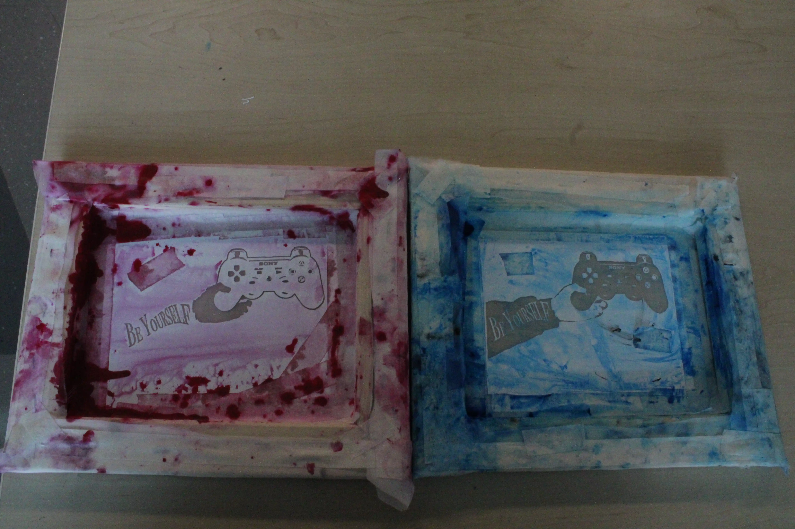
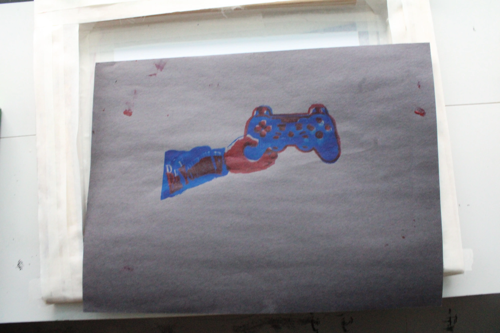
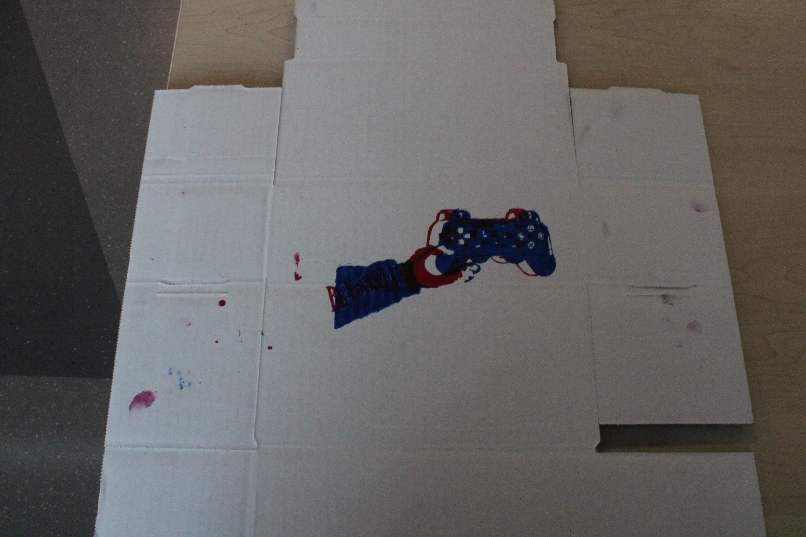
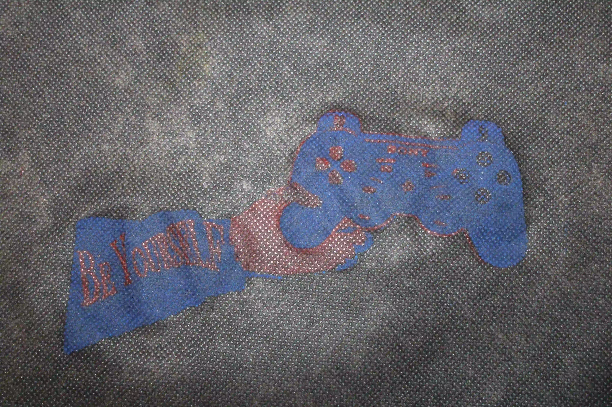

In our New Media class, we did a screenprint project.
We started by going on Adobe Photoshop and we created a piece of art based on an encouraging message.
We start by taking a photo of ourselves and the desired object we want to use and we manipulated the object to fit on my hand. After that, we manipulate the photo using threshold and gradient

After we made our art on Adobe Photoshop, we start to build a wooded frame to put paste our art in
We build the frame by cutting wood and gluing it together. Then we cut out some mesh and after that, we print out our art on a special type of printing paper and weed out our art.

Frames
Finally we apply our paint to our frame and "print" it on three types of sufaces shown here

Paper

Box

Fabric